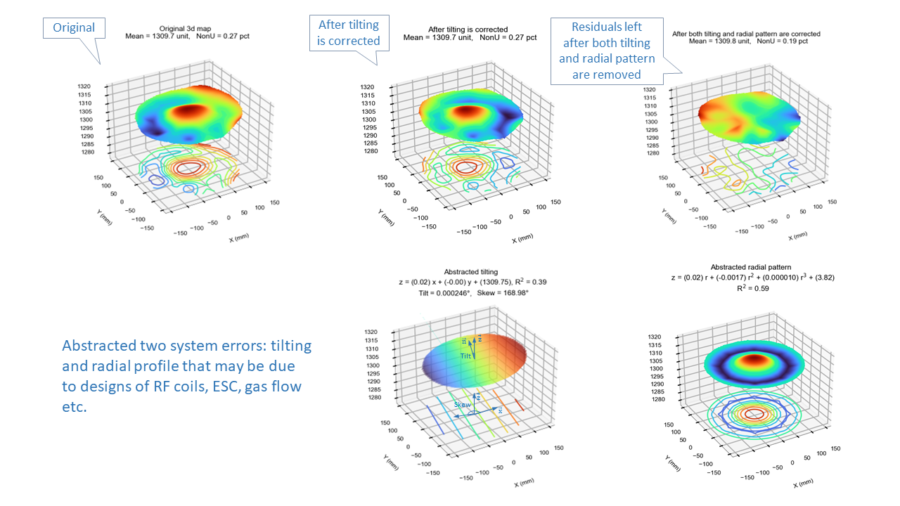

Wafer Visualization - WaferViz
About
WaferViz is a free wafer plotting software intended for semiconductor engineers.
As a process engineer myself I found it is helpful having plotting program handy for converting raw data to presentable graphs since in fabs where plotting programs are often embedded in metrology tools and not readily accessible.
User Interface

Key Features
- Animated 3d map:

- 3d maps with profile decomposition:
- 2d maps with rotation:
- Cross sectional graphs:

- Thickness as radius and theta increasing:
- Thickness distribution:

User Guide
Click "How to use" in the left sidebar for instruction.